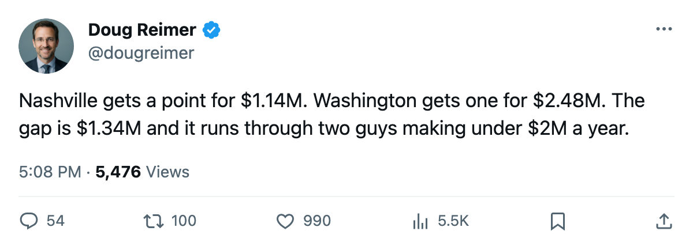
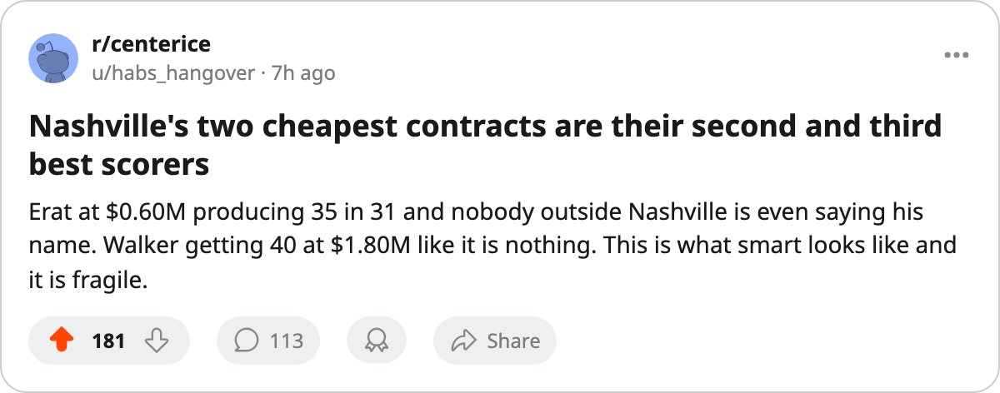

NSH
NSH$1.14M a Point, 3rd in the West, and the Man Who Makes It Work Walks in July
Nashville has the best cost per point in hockey on a $51.08M payroll. Two of the three contracts driving that number cost less than $2.00M. The third costs $8.37M and has one year left.
 Doug ReimerAnalytics editor, ex-video coach · The Slot Report
Doug ReimerAnalytics editor, ex-video coach · The Slot Report
Nashville has the cheapest production in hockey. The Predators sit at $1.14M per point on a $51.08M payroll with 45 points through 31 games, 3rd in the Western Conference. No other club gets a point for less.
The method is straightforward: divide payroll by points earned. The full table runs from Nashville at $1.14M to Washington at $2.48M, a spread of $1.34M per point.
The two contracts nobody talks about
 David Legwand89 leads the league at 49 points in 31 games, a 130 pace. He earns $8.37M, has 1 year left on his deal, and sits at 89 in the Book. Every reader knows that line.
David Legwand89 leads the league at 49 points in 31 games, a 130 pace. He earns $8.37M, has 1 year left on his deal, and sits at 89 in the Book. Every reader knows that line.
The two men behind him are the story.  Scott Walker84 has 40 points in 31 games at $1.80M.
Scott Walker84 has 40 points in 31 games at $1.80M.  Martin Erat85 has 35 points in 31 games at $0.60M. Walker is 84 overall, Erat is 85. They have produced 75 points between them on contracts that cost less than a single top-pairing defenseman's salary in most of this league.
Martin Erat85 has 35 points in 31 games at $0.60M. Walker is 84 overall, Erat is 85. They have produced 75 points between them on contracts that cost less than a single top-pairing defenseman's salary in most of this league.
Here is what their numbers looked like last season, from the season-by-season record:
| player | last season GP | last season PTS | last season pace | this season GP | this season PTS | this season pace | salary |
|---|---|---|---|---|---|---|---|
| Scott Walker | 54 | 84 | 128 | 31 | 40 | 106 | $1.80M |
| Martin Erat | 79 | 53 | 55 | 31 | 35 | 93 | $0.60M |
Erat's jump from a 55 pace to a 93 pace is the largest single-season pace improvement among any Nashville player. He is 24, costs $0.60M, and is producing 27 assists in 31 games. These contracts don't make the back page, but they are why the cost per point reads $1.14M.
The room knows
Nashville's club morale average sits at 95.1, 4th in the league. Only Tampa Bay, Colorado, and St. Louis are higher. The Predators' profit stands at $22.32M on $49.41M in revenue with 15,753 at the gate at $82 a ticket. The building is full, the payroll is the 25th-highest in a 30-club league, and the points keep coming.
The Development Index confirms the shape. Nashville has 39 men on the Index's riser list with a combined expected output of 1,032 points against $72.05M in individual salaries. That depth of positive-form bodies at those salaries is what the Index shows behind the cost-per-point number.
The problem is July
Legwand's deal expires after this season. $8.37M, 25 years old, 130 pace, 89 overall. If he signs elsewhere at market, Nashville loses the man who leads the league in points and walks into the $2.00M-per-point range overnight.
 Tomas Vokoun91 also walks: 91 overall, $0.90M, 24 starts. The goaltending replacement at that price is not obvious.
Tomas Vokoun91 also walks: 91 overall, $0.90M, 24 starts. The goaltending replacement at that price is not obvious.
The other 29 clubs watch Nashville and see $1.14M per point. The Predators watch July and see the number that made them the league's best value disappearing down the middle. The window that created it closes in seven months.

